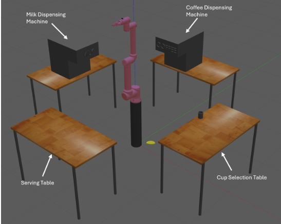
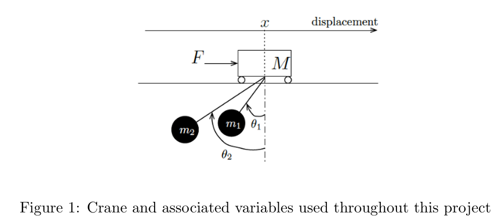

Barista Robot

In this project we use the UR10 6 DOF manipulator to autonomously navigate through the milk and coffee dispensers to make the coffee beverage in ROS and Gazebo Simulation.
Roboticist|ML Enthusiast skilled in Python,C++,ROS, Git, Linux,Pytorch,Tensorflow @manasdesai

In this project we use the UR10 6 DOF manipulator to autonomously navigate through the milk and coffee dispensers to make the coffee beverage in ROS and Gazebo Simulation.

In this project we help an autonomous ground robot reach its goal destination using path planning and various state estimation techniques.

In this project we design and implement LQR and LQG controllers for a two-pendulum crane system, analyzing stability, controllability, and observability to optimize dynamic state regulation and control performance.

In this project we implement and review several path planning algorithms along with dealing with sensor noises by using Kalman filters and G-H filters.

In this project we implement several Neural Networks like FNNs,CNNs and DCGANs to classify and generate images using the MNIST dataset